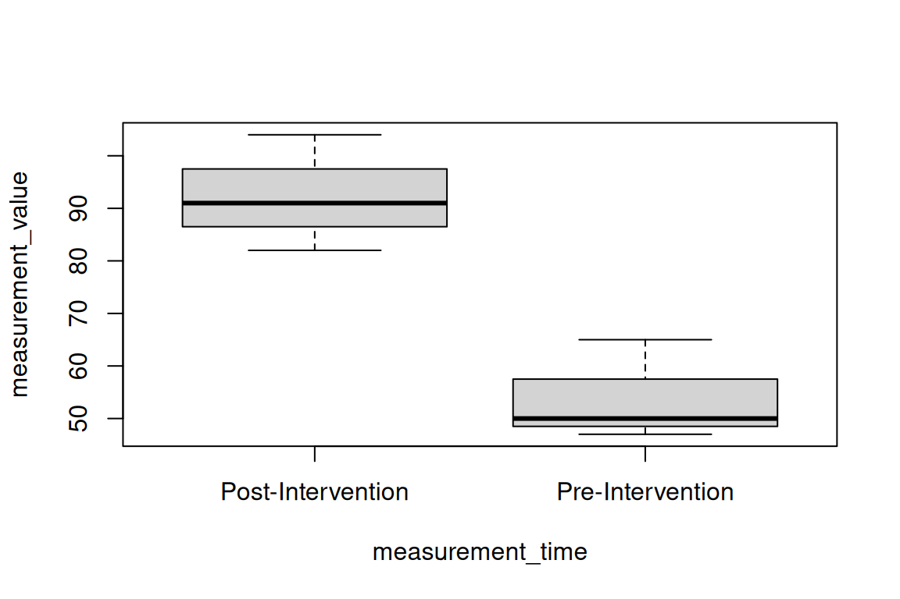
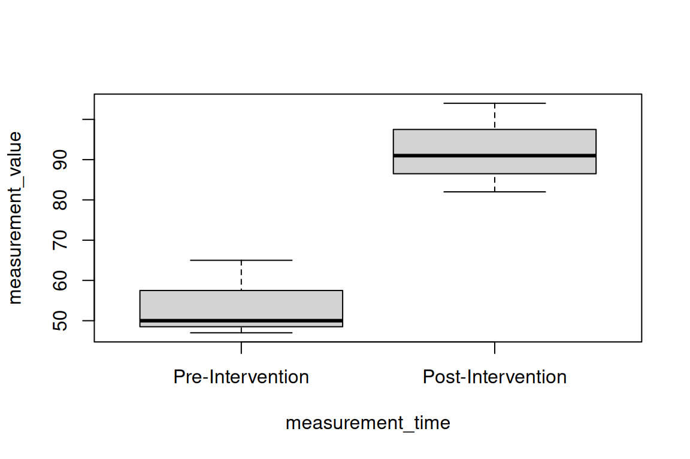
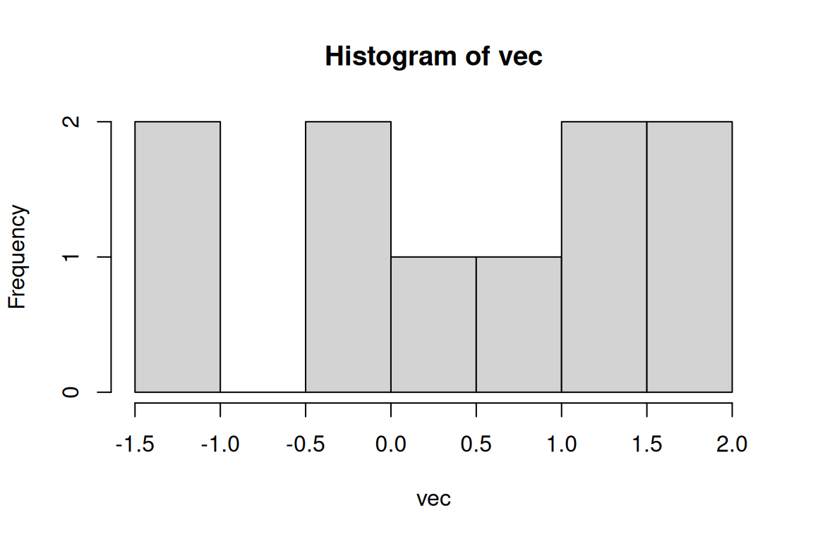

9 Dates, Factors and Missing Values
library(dplyr)9.1 Overview
So far we’ve been working with character data, numeric or integer data, and logicals. There’s a few other more complicated data types you’ll often come across in health/pharmaceutical data: factors and dates. Sometimes, you’ll also find you’re missing a type of data altogether! Let’s take a little break from dplyr to learn more about these types of data.
9.2 Factors
- A factor is a special data type in R used for categorical data.
- Categorical data is data where there a few different “types” of something, and the types are not particularly ordered.
- Example: continent, blood type
- In R, a factor has a defined number of “levels”. Each level is associated with an integer value, and the level of each item in a vector is stored as the corresponding integer
# Convert a character vector to a factor using `factor`
pre_factored <- c("cat", "dog", "cat")
facts <- factor(pre_factored)
# Check what the levels are using `levels`
levels(facts)
#> [1] "cat" "dog"R knows to treat factors differently from character strings.
Useful for statistics (ex: modeling tooth length as a function of dose size (numerical) and supplement type (factor))
Useful when you want to keep order consistent between plots, tables
Older versions (<4.0) of R used to store character strings as factors. This was usually unhelpful, and now stores this type of data as a character string.
What if we don’t like the order these are in? Factor order is important for all kinds of things like plotting, analysis of variance, regression output, and more
# Does this factor order reflect what you'd want it to be?
factor(c("Post-Intervention", "Pre-Intervention"))
#> [1] Post-Intervention Pre-Intervention
#> Levels: Post-Intervention Pre-Intervention9.2.1 Ordering Factors
- Factors simply have an additional attribute explaining the order of the levels of a factor
- This is a useful shortcut when we want to preserve some of the meaning provided by the order
- The forcats package (part of the tidyverse) has several helpful functions for reordering factors—you don’t need to reorder by hand!
pt_data <- data.frame(
MRN = rep(c(97, 107, 402),2),
measurement_time = c(rep("Pre-Intervention", 3), rep("Post-Intervention", 3)),
measurement_value = c(50, 65, 47, 104, 82, 91)
)
pt_data
#> # A tibble: 6 × 3
#> MRN measurement_time measurement_value
#> <dbl> <chr> <dbl>
#> 1 97 Pre-Intervention 50
#> 2 107 Pre-Intervention 65
#> 3 402 Pre-Intervention 47
#> 4 97 Post-Intervention 104
#> 5 107 Post-Intervention 82
#> 6 402 Post-Intervention 91
boxplot(measurement_value ~ measurement_time, data = pt_data)
# Did the intervention increase or decrease the measurement value?
# Factor the data by supplying the argument `levels`
pt_data$measurement_time <- factor(
pt_data$measurement_time,
levels = c("Pre-Intervention", "Post-Intervention")
)
boxplot(measurement_value ~ measurement_time, data = pt_data)
levels(pt_data$measurement_time)
#> [1] "Pre-Intervention" "Post-Intervention"

9.2.2 Reclassifying Factors
- Turning factors into other data types can be tricky. All factors have an underlying numeric structure.
levels(pt_data$measurement_time)
#> [1] "Pre-Intervention" "Post-Intervention"
unclass(pt_data$measurement_time)
#> [1] 1 1 1 2 2 2
#> attr(,"levels")
#> [1] "Pre-Intervention" "Post-Intervention"
as.numeric(pt_data$measurement_time)
#> [1] 1 1 1 2 2 2- Hmmm, what happened?
- The best way to convert a factor is to convert it to a character first.
- This is a common source of bugs!
fact3 <- factor(c(8, 10, 3))
# wrong way!
as.numeric(fact3)
#> [1] 2 3 1
# right way!
as.numeric(as.character(fact3))
#> [1] 8 10 3
# many paths to the right way
fact3 |>
as.character() |>
as.numeric()
#> [1] 8 10 39.3 Datetimes (dates with time stamps)
Datetimes are really common in healthcare data: when did the patient take a particular drug? What time was a sample collected?
A class of variable for handling datetimes is POSIXct:
sample_time <- as.POSIXct("2024-03-14 10:30:00")
sample_time
#> [1] "2024-03-14 10:30:00 UTC"This class makes it easy to do math with datetimes (don’t reinvent the wheel!)
sample_time_2 <- as.POSIXct("2024-03-14 11:35:00")
sample_time_2 - sample_time
#> Time difference of 1.083333 hoursThere are many ways to write dates and times, and R sometimes needs help understanding how to read this information:
# ambiguous:
dt1 <- as.POSIXct("14/03/2024, 10:30:00")
# tell R how to parse:
dt1 <- as.POSIXct("14/03/2024, 10:30:00", format="%d/%m/%Y, %H:%M:%S")
dt1
#> [1] "2024-03-14 10:30:00 UTC"%Y: year with century. ex: 2020. %y: year without century. ex: 98 (1998)
%m: month as a two-digit number. 03: March. 12: December. %d: day of the month as a decimal number. 05, 17, etc.
?strptimeConverting from date/time to hours after dose is pretty common in PK analysis…
Use the function difftime()
dose1t <- as.POSIXct("03/02/11 10:15:00", format = "%m/%d/%y %H:%M:%S")
dose2t <- as.POSIXct("03/02/11 18:23:00", format = "%m/%d/%y %H:%M:%S")
dose2t - dose1t
#> Time difference of 8.133333 hours
difftime(dose2t, dose1t, units = "mins")
#> Time difference of 488 mins# Or in dataframe calculations:
patients <- data.frame(
ID = c(rep(1,3), rep(2,2)),
datetime = as.POSIXct(
c("03/02/11 10:15:00", "03/02/11 18:23:00","03/02/11 23:34:00",
"03/03/11 02:30:00", "03/03/11 13:24:00"
),
format = "%m/%d/%y %H:%M:%S"
),
EVID = c(1, 1, 0, 1, 0),
DV = c(0, 0, 10.8, 0, 16),
DOSE = c(100, 100, 0, 100, 0)
)
patients
#> # A tibble: 5 × 5
#> ID datetime EVID DV DOSE
#> <dbl> <dttm> <dbl> <dbl> <dbl>
#> 1 1 2011-03-02 10:15:00 1 0 100
#> 2 1 2011-03-02 18:23:00 1 0 100
#> 3 1 2011-03-02 23:34:00 0 10.8 0
#> 4 2 2011-03-03 02:30:00 1 0 100
#> 5 2 2011-03-03 13:24:00 0 16 0# Calculate the time since the first dose for each patient
There’s lots more packages/functionality for dates/times: see the lubridate package (part of the tidyverse) and ?DateTimeClasses.
9.4 Missing Values and other Data Oddities
Since it was designed by statisticians, R handles missing values very well relative to other languages.
9.4.1 Mathematically Strange Numbers
- To infinity and beyond
big <- 1e500
big
#> [1] Inf
big + 7
#> [1] InfNaNstands for Not a Number
sqrt(-5)
#> Warning in sqrt(-5): NaNs produced
#> [1] NaN
big - big
#> [1] NaN
big
#> [1] Inf
-1/0
#> [1] -Inf9.4.2 NA
NA is a missing value, and it “holds a place” for where a number or observation should be.
vec <- rnorm(12)
vec[c(3, 5)] <- NA
vec
#> [1] 1.5241144 1.8805855 NA 1.0403284 NA 0.2991738
#> [7] 1.4826729 -1.2562715 0.6182018 -1.2315773 -0.1732204 -0.4998378
length(vec)
#> [1] 12When have you encountered missing values in data sets you’ve worked with?
Be careful because many R functions won’t warn you that they are ignoring the missing values.
sum(vec)
#> [1] NA
sum(vec, na.rm = TRUE)
#> [1] 3.68417
?sum
hist(vec)
is.na(vec)
#> [1] FALSE FALSE TRUE FALSE TRUE FALSE FALSE FALSE FALSE FALSE FALSE FALSE
9.4.3 NULL
NULL means that nothing is there, nor that anything should be expected to be there. If you assign an index NULL, you remove it completely. NA can hold a place but NULL cannot.
c(1, 9, NA)
#> [1] 1 9 NA
c(1, 9, NULL)
#> [1] 1 9
vec
#> [1] 1.5241144 1.8805855 NA 1.0403284 NA 0.2991738
#> [7] 1.4826729 -1.2562715 0.6182018 -1.2315773 -0.1732204 -0.4998378
length(vec)
#> [1] 12
vec[6] <- NULL
#> Error in `vec[6] <- NULL`:
#> ! replacement has length zero
vec[7] <- NA
a
#> Error:
#> ! object 'a' not found
a <- NULL
a
#> NULL
a + 7
#> numeric(0)Often, you’ll encounter NULL when trying to index into something incorrectly
library(datasets)
ToothGrowth
#> # A tibble: 60 × 3
#> len supp dose
#> <dbl> <fct> <dbl>
#> 1 4.2 VC 0.5
#> 2 11.5 VC 0.5
#> 3 7.3 VC 0.5
#> 4 5.8 VC 0.5
#> 5 6.4 VC 0.5
#> 6 10 VC 0.5
#> 7 11.2 VC 0.5
#> 8 11.2 VC 0.5
#> 9 5.2 VC 0.5
#> 10 7 VC 0.5
#> # ℹ 50 more rows
ToothGrowth[["Length"]]
#> NULLThis works the other way around too, to remove a component of a list
nonnulls <- data.frame(
a = c(1:5),
b = letters[1:5]
)
nonnulls
#> # A tibble: 5 × 2
#> a b
#> <int> <chr>
#> 1 1 a
#> 2 2 b
#> 3 3 c
#> 4 4 d
#> 5 5 e
nonnulls[["a"]] <- NULL
nonnulls
#> # A tibble: 5 × 1
#> b
#> <chr>
#> 1 a
#> 2 b
#> 3 c
#> 4 d
#> 5 eNULL is useful for having a function argument default to ‘nothing’.
?t.test9.5 Breakout
- Create a factor variable with the levels of the factor in the order of the colors of the rainbow (“red”, “orange”, “yellow”, “green”, “blue”, “indigo”, “violet”). Create a second factor variable with the levels of the factor in alphabetical order.
- Below are two different datetimes. How many hours apart are they? How many days apart are they? Use an argument supplied to
difftimeto convert units, rather than dividing by 24.
- Demonstrate, using the function
identical, that setting a column intest_data_frameto NULL is the same as usingdplyr::selectto remove a column from a data frame.
- Coerce the vector
my_numbersto a numeric vector. Count how many NA’s were introduced. (Hint: R interprets TRUE as having a value of 1 and FALSE as having a value of 0)